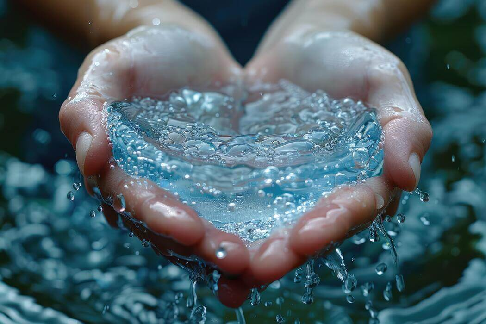
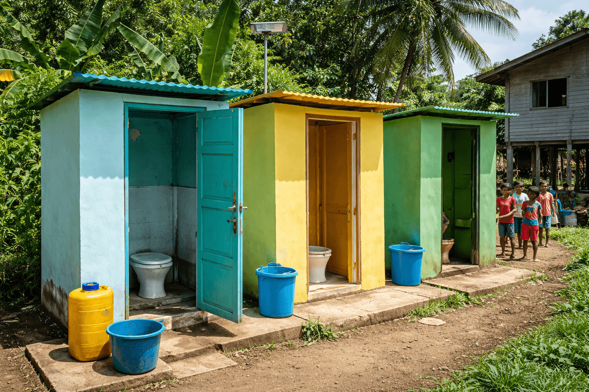
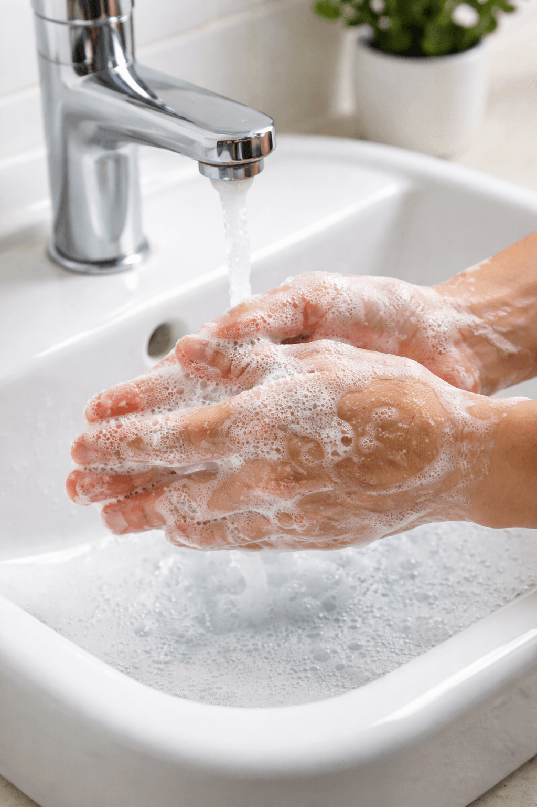
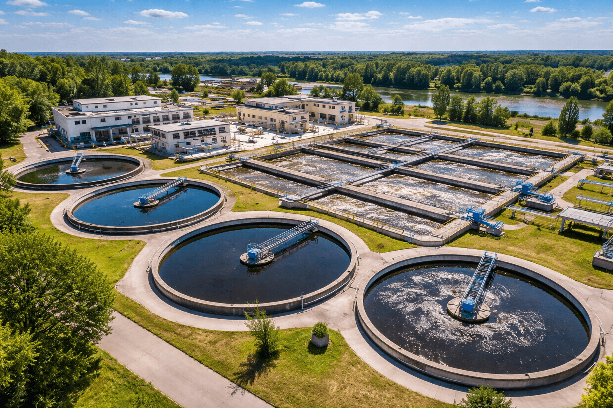
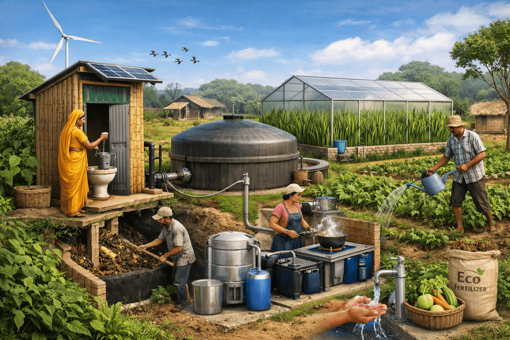

Introduction

Clean water is essential for human survival. SDG 6 focuses on ensuring access to safe and affordable drinking water and improving sanitation facilities worldwide.
Sustainable Development Goal 6 (SDG 6) on Clean Water and Sanitation is a global commitment to ensure that everyone has access to safe drinking water, adequate sanitation, and proper hygiene by 2030. Water is essential for life, health, and development, yet millions of people worldwide still face shortages, contamination, and lack of sanitation facilities. This goal emphasizes not only providing clean water but also managing it sustainably—protecting rivers, lakes, and groundwater from pollution and overuse. Achieving SDG 6 is critical because without clean water and sanitation, progress in reducing poverty, improving health, and ensuring education cannot be sustained. It calls for investment in infrastructure, innovation in water management, and cooperation across communities and nations to secure this fundamental human right for all.
🚽 Access to Sanitation Facilities

Many people around the world still do not have access to basic sanitation facilities such as toilets. This leads to open defecation, which contaminates the environment and water sources. Providing safe, affordable, and accessible toilets is one of the most important steps in improving sanitation and protecting public health.
🧼 Hygiene Practices

Good hygiene practices, such as regular handwashing with soap, are essential to prevent the spread of diseases. Education and awareness programs help people understand the importance of cleanliness in their daily lives. Simple habits can significantly reduce infections and improve overall community health.
💧 Wastewater Management

Proper treatment and disposal of wastewater are important to prevent pollution and protect natural water sources. Without proper systems, waste can enter rivers and lakes, harming both humans and ecosystems. Investing in sewage systems and treatment plants ensures cleaner water and a safer environment.
🌱 Sustainable Sanitation Solutions

Sustainable solutions focus on long-term improvements, such as eco-friendly toilets, water-saving technologies, and recycling wastewater. Governments and communities must work together to promote responsible water use and sanitation practices. These solutions help protect the environment while meeting the needs of growing populations.